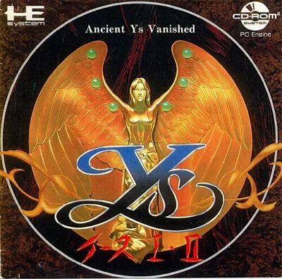

PC Engine
Ys Book I & II
- Año: 1989
- Desarrollador: Hudson Soft
- Género: Rol / Acción
- Jugadores: 1 jugador
Ys I y II, de Nihon Falcom, en un solo CD para PC Engine (en Japón, «Ys I・II»; en Estados Unidos, «Ys Book I & II»). Es un juego de rol y acción: el joven espadachín Adol Christin llega a la tierra de Esteria y debe reunir los seis libros de Ys para descubrir qué pasó con el antiguo reino de Ys.
Se combate chocando contra los enemigos, sin pulsar ningún botón: si se les embiste un poco de lado, y no de frente, se les hace daño sin recibirlo. Esta versión de CD añadió escenas animadas, voces y una banda sonora con pistas de CD que la hicieron muy famosa.
Controles
que el juego arranque (es el CD japonés y la BIOS del USB es la americana) y que Adol se mueva con el joystick: se ataca chocando contra los enemigos, sin botones. Ver qué botones abren el menú y, en Ys II, lanzan la magia (⚠️ no he encontrado los controles). ¿Se oyen la música y las voces del CD?
Mando de PC Engine: dos botones.
| Panel | Juego |
|---|---|
 | II |
 | I |
 | Run |
 | Select |
+  | Salir del juego |
El panel en PC Engine


Argumento
Recopilado de internet (2026-11-04). Lo marcado con ⚠️ no está probado en la bartop.
Ys I. Hace seis meses, una tormenta (el Muro de Tormentas) rodeó la isla de Esteria y la dejó aislada; a la vez aparecieron demonios. El joven espadachín pelirrojo Adol Christin naufraga en ella y lo salva Slaff, del puerto de Barbado. La adivina Sara le habla de los seis Libros de Ys, que cuentan la historia del antiguo reino de Ys y servirán para salvar la isla. Por el camino aparecen la trovadora Reah, que busca su armónica de plata, una chica sin memoria, Feena, a la que Adol rescata de una celda, y el jefe de los bandidos, Goban. Sara es asesinada por un hombre de capa oscura, y los últimos libros están en la Torre de Darm.
Ys II. Los libros elevan a Adol hasta Ys, una isla que flota sobre Esteria desde hace 700 años. Allí lo cuida Lilia, de la aldea de Lance, y los espíritus de los seis sacerdotes de Ys le encargan encontrar a las dos diosas y acabar con el mal en el Santuario de Salomón, mientras el mago Dalles intenta detenerlo.
Final: en lo alto de la torre, Adol vence a Dark Fact, que guardaba el último libro; al leerlos todos, los monstruos de Esteria desaparecen. En Ys II, las diosas resultan ser Feena y Reah. Adol vence a Dalles y luego a Darm, la forma viva de la Perla Negra, origen de la magia y de los demonios. La isla vuelve a su sitio en Esteria y Feena, que tiene que volver a dormir como diosa, se despide de Adol.
Fuentes
Jugabilidad
Recopilado de internet (2026-11-04). Lo marcado con ⚠️ no está probado en la bartop.
- Rol y acción de Hudson Soft y Alfa System (1989), versiones mejoradas de Ys I e Ys II de Nihon Falcom (PC-8801), en un solo CD. La de la bartop es la japonesa (Ys I・II): los textos y las voces están en japonés.
- Combate chocando: se ataca embistiendo a los enemigos, sin pulsar botones. Mejor de lado o desde atrás que de frente: así se les hace daño sin recibirlo.
- Ys II: se puede usar magia (Adol consigue un bastón y las seis magias de los sacerdotes).
- CD: escenas animadas, voces y música en calidad de CD (de Yuzo Koshiro, Mieko Ishikawa y Hideya Nagata), de lo más famoso del juego.
Botones según las guías (⚠️ por confirmar)
- ⚠️ No he encontrado los controles de esta versión.
Fuentes
Guía de niveles
Recopilado de internet (2026-11-04). Lo marcado con ⚠️ no está probado en la bartop.
| Juego | Lugares |
|---|---|
| Ys I | Puerto de Barbado · las llanuras · aldea de Zepik · el Santuario · la mina abandonada · Torre de Darm (jefe final: Dark Fact) |
| Ys II | Aldea de Lance · ruinas de Moondoria · Santuario de Toal y minas de Rasteenie · Glaciar de Noltia · foso de Burnedbless · aldea de Ramia · Santuario de Salomón · campanario · batalla final (Darm) |
- Nombres de los lugares: los de los capítulos del vídeo (versión americana).
Fuentes
Objetos
Recopilado de internet (2026-11-04). Lo marcado con ⚠️ no está probado en la bartop.
| Objeto | Qué hace |
|---|---|
| Libros de Ys | Seis; cuentan la historia de Ys y guían la aventura |
| Armónica de plata | La de Reah; en Ys II libera a las diosas |
| Monóculo | Permite leer los Libros de Ys |
| Amuletos | Uno evita las trampas de la torre; otro rompe sellos mágicos |
| Bastón | Ys II: permite usar la magia |
| Copa sagrada | Ys II: convierte el agua en agua bendita y quita la maldición de Dalles |
| Ídolo de la piedra soñadora | Ys II: devuelve a la normalidad a los petrificados |
Fuentes
Trucos y secretos
Recopilado de internet (2026-11-04). Lo marcado con ⚠️ no está probado en la bartop.
- Atacar de lado: embistiendo un poco de lado, y no de frente, se hace daño sin recibirlo.
- ⚠️ No he encontrado trucos.
Fuentes
descripción de la ficha (gamelist)
Longplay

Partida completa de la versión TurboGrafx-CD (americana, en inglés; 355 min), de PixelHero: Ys Book 1 & 2 PC Engine CD TurboGrafx CD Longplay Playthrough Hudson Soft 1990.
Pulsa el minuto de un nivel para ver el vídeo desde ese punto.
Lugares
| Juego | Lugares |
|---|---|
| Ys I | |
| Ys II | Lance ▶ 2:18:06Moondoria ▶ 2:22:06Toal / Rasteenie ▶ 2:33:47Sótano de Gila ▶ 2:57:33Noltia ▶ 3:14:26Burnedbless ▶ 3:33:48Nido de Roos ▶ 3:37:15Ramia ▶ 3:56:58Santuario de Salomón ▶ 4:00:53Canal ▶ 4:15:47Escondite ▶ 4:21:47Palacio de las diosas ▶ 4:48:55Campanario ▶ 4:56:41Batalla final ▶ 5:37:20Final ▶ 5:40:32 |